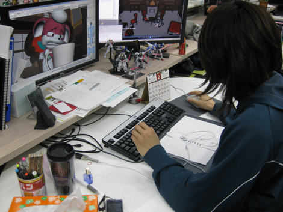
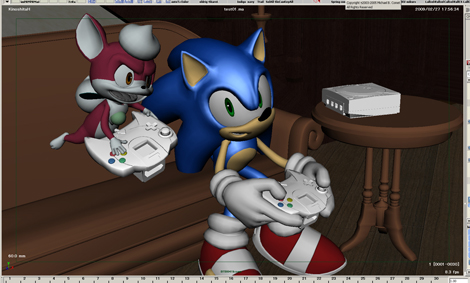
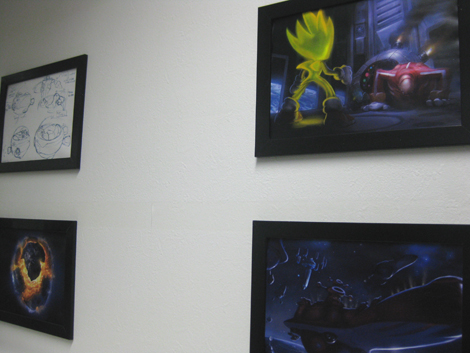

『Night Of The Werehogを、VE研からハミだし！(後編)』
2009年03月03日
こんにちは、マツバラです。
えー、現在、私たちはVE研で……
熱血同期企画のツージーに
引きずられております。
辻下 ： ほら、キリキリ歩きなさい！
こっち、こっち！
ま、待って～。
ツージー、どこ行くの？
辻下 ： 前回はムービーの構成や設定を決める過程の話をしたけど
今回は実際に3D背景やキャラクターを作って動かす
アニメーターの仕事を紹介するから！
はーい。
辻下 ： こちら、アニメーターの木下さん。

木下 ： あ、ハミだしブログの2人だね。
どうも、木下です。
ソニックやチップに動きをつける仕事をしてました。
ハミだしブログをご存知ですか！
いやー、部外の方も見てるなんて
私たちも有名になったね☆
…………。
(悪名高くなったってことだと思うけど)
では早速！
何かハミだしてください！
木下 ： 「ナイト・オブ・ザ・ウェアホッグ」は
モーションキャプチャーを使ってないっていうのが売りのひとつかな。
僕たちアニメーターがすべて手でモーションをつけてる。
だから、デフォルメキャラクターのコミカルな動きを表現できたと思う。
特に力を入れたのはフェイシャルで……
木下さん、ストップ！
木下 ： えっ？
ツージー、今の木下さんの台詞を解りやすく翻訳して。
辻下 ： あのねー！(笑)
キャラクターに動きをつけるには、「モーションキャプチャー」っていって
人間が実際に演技をして、それをコンピューターで読み込んで
読んだ動きをそのままキャラクターにうつす方法があるの。
なんか、聞いたことあるかも！
CGムービー作るときによく使われるって……
辻下 ： でも、今回はそれをせずに、全部アニメーターが考えて動かしてるの。
ソニックたちに、人間らしい動きではなくて、
コミカルな「ソニックらしい動き」をしてほしいから、って。
でも、これ、機械に任せずに全部手作業でやるってことだから、
めちゃめちゃ大変で、コダワリのいる作業なのよ！
ほうほう。よく解った。
では木下さん、続きをどうぞ！
木下 ： 特に力を入れたのはフェイシャ……えーと、表情！(笑)
キャラクターが表情豊かになるようにしたよ。
チップは、かなり「驚き顔」のバリエーション作ったなあ。
面白い表情たくさんしてるので、見てください。
なんかこう、苦労したことや裏ネタなどもハミだして頂きたく。
木下 ： 苦労したところ……チップかなあ。
今までソニックシリーズのムービーを作ってたから
ソニックの動きとか表情は結構頭に入ってたんだ。
でも、チップは新キャラクターだったから……
まず、「コイツ、どんなキャラなの？」ってとこから
出発しなきゃいけなかったわけですね！
木下 ： そう。数人で制作してるから
動きをつける人によってチップの動きのクセが違うなんてことにならないように
すっげー話し合った覚えがある。
「チップってどうやって怖がるんだろ？」「どうやって驚くの？」って。
あのチップのチョコマカした可愛い動きは
スタッフの熱い話し合いによってできているんですね。
木下 ： チップはビックリしたときに決まったポーズをとるんだけど
これ、僕たちアニメーターがこっそり勝手に決めた(笑)
ムービー中で3回出てくるから、良かったら探してね！
あっ！ 私、そのポーズわかるかも！
「ヤー！」っていう感じの……
木下 ： そこまでハッキリ言うのはダメ！(笑)
ネタという意味では、館にセガ製品が置いてあったり
ＶＥ研の遊び心が色々詰め込まれてるから、
キッズステーションで放送するこの機会にチェックよろしく～。
それもわかる！
確か、あそこにドリームキャストが……
木下 ： だから、見てのお楽しみだってば！(笑)
マツバラはあのムービーを
アホみたいに見まくってるからなあ……
えへっ。
見れば見るだけ発見があって、面白いよ！
木下 ： あと、何かハミだせることはあったかなあ……。
……ん？
いま一瞬モニタにうつったコレは何ですか？

ソニックとチップがドリームキャストで遊んでる！
かわい～い！
……でも、こんなシーン、
本編にありませんよね？
木下 ：あ、それは、ボツネタの1つ。
仮モデルで作ってみたんだ。
「こんなことさせたら楽しいんじゃないか？」って出したネタでも
時間の関係でボツになったりしたなあ。
なんと。
もったいない！
本編で見てみたかったなあ……
辻下 ： ……とまあ、こうやって、
アニメーターさんが付けた動きをキャラクターモデルに入れて、
背景モデルに置いて、
最終的に1コマ1コマレンダリングしてコンポジットするの。
連打リング……？
梱包じっと……？
辻下 ：えーと、作った立体物を、撮影して、1枚の画像にするの。
それを、何万枚も用意して、
パラパラ漫画の要領で流して、動くアニメ映像にするって意味！
最初からそう言おうよ、ツージー。
辻下 ： ……まあ、難しいことはいいか(笑)
この作業も大変だったなあ。
全員妥協がないから、やり直しの嵐！
作ったモデルを、ただ撮影するだけじゃないの？
辻下 ： とんでもない！！
ひぃっ。
辻下 ： 例えば、ウェアホッグの毛だって！
生え際とか光の当たり具合ひとつひとつ別の資料を用意して
魅力的な毛表現をするために毛の本数をすっごく増やしたら……
(「魅力的な毛表現」ってすごいフレーズだなあ)
辻下 ： いざ撮影するときに処理が追いつかなくて
落ちまくったり、うまく毛が流れなかったりしたんだから！
ウェアホッグの毛の担当スタッフは相当泣いてた。
なるほど……
ウェアホッグたんの魅力的なモフモフ毛は
そういう苦労からできてたんだね！
『SWA』OPムービーの初変身シーンでも
あの毛はスゴかった。
思わず触りたくなった。
えーっと、それじゃあツージー、
最後になにかヒトコト……
辻下 ： ヒトコト！？
い、いえ、すいませんでした。
お好きなだけ語ってください……
辻下 ： ま、ひととおりの流れは説明したし
あんまり長くなるとブログを読む人も大変だから
このへんで締めようかな。
ツージー先生、お願いします！
辻下 ：世界中の大人から子供まで楽しめるように
ＶＥが丹精込めて作り上げたムービーです。
難しいことは抜きにして楽しんでもらえたら嬉しいですっ！
ツージー、ありがとう！

ＶＥ研でみつけた、『SWA』OPムービーのコンセプトアート
いやー、軽い気持ちで電話したら
えっらいことになったね。
普段、私たちがデジカメもってウロついてると
「今度は何をハミだすんだ！？」って警戒されるから
今回みたいに「もっとハミだせ」と言われたのは初めてで……
そ、そんな本当のことを！
でも、楽しかった！
VE研の人たちがどう仕事してるかなんて全然知らなかったもん。
予想以上にスゴかったね～！
ちなみに、「ナイト・オブ・ザ・ウェアホッグ」に登場する
男の子の幽霊2人組は
『SWA』PS3/Xbox360版にも登場します☆
あの楽しい2人組は
『SWA』でも、なかなかひょうきんな形で出てきます。
少しお話を進めたところで
スパゴニアの町の誰かに話しかけると、会うことができるはず！
チェックしてみてくださいね！
ではマツバラ、最後にもう一発、宣伝を。
任せて！
VE研の人たちがこれでもかと情熱をかけて制作した
「ナイト・オブ・ザ・ウェアホッグ」！
3月1日より、
キッズステーションにて放送されています！
詳細は当ページの以下！
是非チェックしてください！
ソニックのショートムービー 『Night Of The Werehog』
2009年3月1日よりキッズステーションにて放映開始！詳しくはこちらのサイトをご覧下さい。
日時: 2009年03月03日 18:00 | パーマリンク


 ソニックを愛する、元気な『SWA』2年目プランナー。
ソニックを愛する、元気な『SWA』2年目プランナー。 マイペースな『SWA』2年目プランナー。
マイペースな『SWA』2年目プランナー。
 ご意見・ご要望はこちら
ご意見・ご要望はこちら RSS
RSS